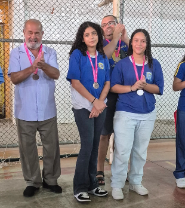

Escola Estadual Elisio Carvarlho Brito é Destaque no JEMG 2025 e Vence na Modalidade de Xadrez
Os Jogos Escolares de Minas Gerais (JEMG/2025) – o maior evento esportivo-escolar do Brasil, promovido pela Secretaria de Estado de Desenvolvimento Social (SEDESE) em parceria com a Secretaria de Estado de Educação e executado tecnicamente pela Federação de Esportes Estudantis de Minas Gerais (FEEMG) – consagraram mais uma vez o esporte como ferramenta pedagógica de cidadania, inclusão social, saúde e revelação de talentos.
Nesta edição, escolas públicas e particulares de todo o estado competiram em quatro fases (Municipal, Microrregional, Regional e Estadual), em modalidades coletivas (futsal, handebol, basquete, vôlei) e individuais (judô, natação, xadrez, entre outras).

E entre as instituições que brilharam no pódio, destaca-se a Escola Estadual Elisio Carvarlho Brito, que conquistou o título de uma das vencedoras na modalidade de xadrez.
Com estudantes-atletas do ensino fundamental e médio, a escola demonstrou que a estratégia, a paciência e o raciocínio lógico – marcas do xadrez – também são caminhos poderosos para a formação integral. A vitória no tabuleiro reflete o compromisso da instituição com o desenvolvimento intelectual e esportivo de seus alunos, provando que o JEMG vai muito além da competição: é um celeiro de cidadania e aprendizado.
A comunidade escolar comemora com orgulho essa conquista, que coloca a Escola Estadual Elisio Carvarlho Brito entre as grandes protagonistas dos Jogos Escolares de Minas Gerais em 2025. Parabéns aos enxadristas, professores e a toda a equipe que tornou esse feito possível. Sobretudo ao nosso querido professor Sampaio.